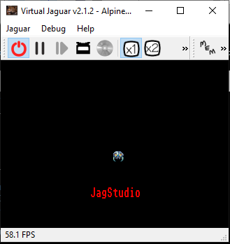
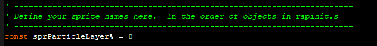
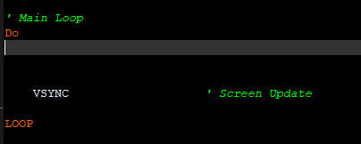
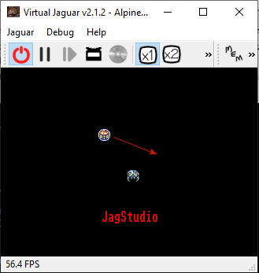

A complete Assembler, BASIC and 'C' Development Suite for the Atari Jaguar
Quick Start Guide - Updated: Jan 27th, 2021 - v1.0

Quick Start Guide
This guide is designed to walk a newcomer through starting a new project in Basic, getting some graphics on the screen with some simple input and sound effects.
The finished version of the project created in this guide can
be found in your JagStudio folder under \projects\basic\quickguide.
JagStudio supports BASIC, C and Assember languages, but this guide is written for BASIC only.
If
you would like to learn more, please read the reference manual, explore
all the example projects or visit the official site at jagstudio.reboot-games.com
or the forums over at AtariAge.
The
docs folder also contains the help file for BCX Basic (BCXHelp.chm)
upon which the Basic portion of JagStudio is based. This can
be
very useful for exploring what commands are available.
Index
- Setting up the project
- Adding a sprite
- Controlling your sprite with the JoyPad
- Auto sprite movement
- Making Noise
- Running the example projects
- Syntax Highlighting for BASIC in Notepad++
Tools to use
You are free to use any tools you find suitable. However, here are some recomendations;| Text Editor | Notepad++ |
| Graphic Editor | Paintshop Pro 7 or 8 |
| Sound Editor | Audacity |
Setting up the project
- Open a command line to the JagStudio folder.
- In Windows, an easy way to do this is to use file
explorer to browse to the Jagstudio folder, then in the breadcrumb at
the top, click in there and type cmd
and press enter. This will open a command window straight in
that folder.
- Type in build yourprojectname newbasic Where yourprojectname is a unique name for your game.
- This will create the nesessary startup project template files for you to edit for your game.
- In file explorer, from your JagStudio folder, browse to \projects\basic\yourprojectname
- You will see a selection of files and folders. These are;
-
assets folder Where you store your graphics, sound effects, fonts and music yourprojectname.bas file This is the main file for your game where you will put the majority of your code assets.txt file This is where you declare all your assets from the assets folder and how they are converted/imported into your game rapapp.s file This is the main Raptor startup file. Generally you do not need to touch this file except for choosing your sound/input engine rapinit.s file This is where you declare all the sprite objects your game will use. These will be sprites, backgrounds and text/particle layers rapu235.s file If you are using the U235 Sound Engine then this is where you set up your sound effects. - You need to decide which sound and input engine you want to use for your game. See the relevant sections in the manual for descriptions and features of each. We will use Zerosquares player for this guide.
- Once decided, open rapapp.s in a text editor (we recommend Notepad++) and look at the top. You will see the line;
- player equ 0 ;0=Zerosquare's player, 1=U-235 player
- The 0 after the equ must be set to 0 for Zerosquares player or 1 for U235.
- As we are using Zerosquares player for this guide, leave it as 0 and save and close the file. You are now ready to start creating your game.
Adding a sprite
- To keep things straight forward, we will provide you with some assets to play with. You can experiment with your own afterwards :)
- From your JagStudio folder, using file explorer, browse to \docs\quickstartassets\ and copy bug1.bmp and bug2.bmp.
- Then browse to your project folder in \JagStudio\projects\basic\yourprojectname and open the \assets\gfx\ folder.
- Paste the two files in there.
- For now, we will just use one of these graphics.
- In your project root folder, open assets.txt in a text editor.
- Type in the following line. This tells JagStudio where in memory the sprite will be stored, what to call it, what kind of CLUT it uses and the path to the graphic file.
- ABS,SPRITE_BUG,gfx_clut16,assets\gfx\bug.bmp
- Save your changes.
- Now open rapinit.s in a text editor.
- This is the file that tells the Jaguar what objects (sprites) exist in your game. The object processor will process this list and display the relevant graphics.
- Scroll down until you see the ;Template line - then paste the following code above that line.
; Bug
dc.l 1 ; (REPEAT COUNTER) ; Create this many objects of this type (or 1 for a single object)
dc.l is_active ; sprite_active ; sprite active flag
dc.w 176,0 ; sprite_x ; 16.16 x value to position at
dc.w 130,0 ; sprite_y ; 16.16 y value to position at
dc.w 0,0 ; sprite_xadd ; 16.16 x addition for sprite movement
dc.w 0,0 ; sprite_yadd ; 16.16 y addition for sprite movement
dc.l 16 ; sprite_width ; width of sprite (in pixels)
dc.l 16 ; sprite_height ; height of sprite (in pixels)
dc.l is_normal ; sprite_flip ; flag for mirroring data left<>right
dc.l 0 ; sprite_coffx ; x offset from center for collision box center
dc.l 0 ; sprite_coffy ; y offset from center for collision box center
dc.l 16/2 ; sprite_hbox ; width of collision box
dc.l 16/2 ; sprite_vbox ; height of collision box
dc.l SPRITE_BUG ; sprite_gfxbase ; start of bitmap data
dc.l 16 ; (BIT DEPTH) ; bitmap depth (1/2/4/8/16/24)
dc.l is_RGB ; (CRY/RGB) ; bitmap GFX type
dc.l is_trans ; (TRANSPARENCY) ; bitmap TRANS flag
dc.l 16*16*2 ; sprite_framesz ; size per frame in bytes of sprite data
dc.l 16*2 ; sprite_bytewid ; width in bytes of one line of sprite data
dc.l 0 ; sprite_animspd ; frame delay between animation changes
dc.l 0 ; sprite_maxframe ; number of frames in animation chain
dc.l ani_rept ; sprite_animloop ; repeat or play once
dc.l edge_wrap ; sprite_wrap ; wrap on screen exit, or remove
dc.l spr_inf ; sprite_timer ; frames sprite is active for (or spr_inf)
dc.l spr_linear ; sprite_track ; use 16.16 xadd/yadd or point to 16.16 x/y table
dc.l 0 ; sprite_tracktop ; pointer to loop point in track table (if used)
dc.l spr_unscale ; sprite_scaled ; flag for scaleable object
dc.l 32 ; sprite_scale_x ; x scale factor (if scaled)
dc.l 32 ; sprite_scale_y ; y scale factor (if scaled)
dc.l -1 ; sprite_was_hit ; initially flagged as not hit
dc.l 1 ; sprite_CLUT ; no_CLUT (8/16/24 bit) or CLUT (1/2/4 bit)
dc.l can_hit ; sprite_colchk ; if sprite can collide with another
dc.l cd_keep ; sprite_remhit ; flag to remove (or keep) on collision
dc.l single ; sprite_bboxlink ; single for normal bounding box, else pointer to table
dc.l 1 ; sprite_hitpoint ; Hitpoints before death
dc.l 2 ; sprite_damage ; Hitpoints deducted from target
dc.l 16*2 ; sprite_gwidth ; GFX width (of data)- This can look quite daunting at first. These lines all represent an object (sprite) that is displayed on the screen. Each of the lines describes a property to define the sprite. You would typically be editing the properties in the 2nd column of data. You can reference the manual to learn what all these properties do.
- Save the rapinit.s file.
- You can now run your project to see the sprite!
- In the command prompt you opened in the first section
(within the JagStudio folder) type in build yourprojectname
and hit enter. You should now see the following Virtual
Jaguar emulator window;
 - Congratulations, you have now displayed your first sprite!
- When you have finished admiring your static sprite, close the VJ window and lets get on with moving it around the screen.
Controlling your sprite with the JoyPad
- In your project folder, open yourprojectname.bas in a text editor. This is the file where most of your game logic will go. You can use more than one .bas file and $include those files into this one, but lets keep it easy for now.
- First, we need to tell your program what number your new sprite is. The number is its position in the rapinit.s list. If you go back and look, the first object is the text/particle layer, your sprite should be the 2nd item in the list.
- In your bas file, you should see this line;
- 
- Below that line, type in const sprBug1% = 1
- This defines a constant value called sprBug1. It is of type integer and you have assigned it the value of 1. A constant is a value that will never change. From now on in your code, you can refer to this sprite as sprBug1.
- Below that, hit enter a couple of times to give yourself some room and then enter; DIM pad1 AS INTEGER
- This declares a new variable called pad1 that can hold an integer value. We will use this to store the input that comes back from the joypad.
- Now scroll down and find the main game loop. It will look like this;
- 
- Underneath that Do command type in; pad1 = jsfGetPad(LEFT_PAD)
- This gets the input from the left joypad and assigns it to the pad1 variable.
- Now we need to examine that variable input and move the sprite accordingly. Type in the following code;
- IF pad1 BAND JAGPAD_UP
THEN
sprite[sprBug1].y_ -= 2
ELSEIF pad1 BAND JAGPAD_DOWN THEN
sprite[sprBug1].y_ += 2
ENDIF
IF pad1 BAND JAGPAD_LEFT THEN
sprite[sprBug1].x_ -= 2
ELSEIF pad1 BAND JAGPAD_RIGHT THEN
sprite[sprBug1].x_ += 2
ENDIF - These IF statements all check the pad1 variable to see if any of the joypad directions are set. The command sprite[sprBug1].y_ -= 2 will minus 2 pixels from the Y position of the sprite. NOTE: the y_ has an underscore on the end. Dont forget it.
- Now save your bas file and go back to your command prompt and type in build yourprojectname and hit enter.
- You should now see your same sprite again but this time you should be able to move it around the screen. Open the VJ settings window to view the controller keyboard mappings. They will probably either be cursor keys or A/D/S/X.
- You can now move a sprite around the screen with your joypad.
Auto sprite movement
- In this section we will add a second sprite that will move all on it's own. Open your assets.txt file again and enter this new line below your previous one;
- ABS,SPRITE_BUG2,gfx_clut16,assets\gfx\bug2.bmp
- Now open rapinit.s again and enter the following new object definition below your previous sprite (but above the ;template)
- ; Bug2
dc.l 1 ; (REPEAT COUNTER) ; Create this many objects of this type (or 1 for a single object)
dc.l is_active ; sprite_active ; sprite active flag
dc.w 16,0 ; sprite_x ; 16.16 x value to position at
dc.w 16,0 ; sprite_y ; 16.16 y value to position at
dc.w 2,0 ; sprite_xadd ; 16.16 x addition for sprite movement
dc.w 1,0 ; sprite_yadd ; 16.16 y addition for sprite movement
dc.l 16 ; sprite_width ; width of sprite (in pixels)
dc.l 16 ; sprite_height ; height of sprite (in pixels)
dc.l is_normal ; sprite_flip ; flag for mirroring data left<>right
dc.l 0 ; sprite_coffx ; x offset from center for collision box center
dc.l 0 ; sprite_coffy ; y offset from center for collision box center
dc.l 16/2 ; sprite_hbox ; width of collision box
dc.l 16/2 ; sprite_vbox ; height of collision box
dc.l SPRITE_BUG2 ; sprite_gfxbase ; start of bitmap data
dc.l 16 ; (BIT DEPTH) ; bitmap depth (1/2/4/8/16/24)
dc.l is_RGB ; (CRY/RGB) ; bitmap GFX type
dc.l is_trans ; (TRANSPARENCY) ; bitmap TRANS flag
dc.l 16*16*2 ; sprite_framesz ; size per frame in bytes of sprite data
dc.l 16*2 ; sprite_bytewid ; width in bytes of one line of sprite data
dc.l 0 ; sprite_animspd ; frame delay between animation changes
dc.l 0 ; sprite_maxframe ; number of frames in animation chain
dc.l ani_rept ; sprite_animloop ; repeat or play once
dc.l edge_wrap ; sprite_wrap ; wrap on screen exit, or remove
dc.l spr_inf ; sprite_timer ; frames sprite is active for (or spr_inf)
dc.l spr_linear ; sprite_track ; use 16.16 xadd/yadd or point to 16.16 x/y table
dc.l 0 ; sprite_tracktop ; pointer to loop point in track table (if used)
dc.l spr_unscale ; sprite_scaled ; flag for scaleable object
dc.l 32 ; sprite_scale_x ; x scale factor (if scaled)
dc.l 32 ; sprite_scale_y ; y scale factor (if scaled)
dc.l -1 ; sprite_was_hit ; initially flagged as not hit
dc.l 1 ; sprite_CLUT ; no_CLUT (8/16/24 bit) or CLUT (1/2/4 bit)
dc.l can_hit ; sprite_colchk ; if sprite can collide with another
dc.l cd_keep ; sprite_remhit ; flag to remove (or keep) on collision
dc.l single ; sprite_bboxlink ; single for normal bounding box, else pointer to table
dc.l 1 ; sprite_hitpoint ; Hitpoints before death
dc.l 2 ; sprite_damage ; Hitpoints deducted from target
dc.l 16*2 ; sprite_gwidth ; GFX width (of data) - This will display another sprite on the screen but this one will move all on its own. The magic that causes this to happen is in the two properties sprite_xadd and sprite_yadd. We are telling it to move 2 pixels to the right and 1 pixel down.
- Go back to your trusty command prompt and run your game again with build yourprojectname
- You should now see a 2nd sprite moving diagonally across the screen and wrapping back to the left/top.
- 
- It's always good practice to put the constant in your bas file too. It's technically not needed for what we just did, but if you add more sprites, your numbers could end up incorrect.
- Open yourprojectname.bas and at the top under your previous CONST line, add this line;
- const sprBug2% = 2
- Save all changes.
Making noise (Using Zerosquare player)
- Using a file explorer go back to the JagStudio\docs\quickstartassets\ folder and copy explosion.wav
- In your project folder, open the \assets\sfx\ folder and paste the sound file in.
- Now open assets.txt and type in the following line. This tells your game to store the sound in memory at runtime (ABS), gives it a name of explode_sam, tells it to convert the wav file to RAW format and that it's 8000Hz. Finally, it details the path to the sound file.
- ABS,explode_sam,sfx_raw8000,assets\sfx\explosion.wav
- Now we need to play the sound effect. We will just map it to the B joypad button.
- Open yourprojectname.BAS file in a text editor.
- Underneath your previous code for moving the sprite, type in this;
- IF pad1 BAND JAGPAD_B
THEN
zeroPlaySample(1, strptr(explode_sam), (strptr(explode_sam_end)-strptr(explode_sam)+3) and 0xfffffffc, (46168/8000), Zero_Audio_8bit_Signed)
ENDIF - This tells the Jaguar to play the sound when the player presses the B button. This is a complicated looking line but its essentially telling the Zerosquare player which channel to play the sound on (1), the start and end address of your sound, the Hz to play it at and that its an 8bit signed sound file. If you add other sounds, just replace the two explode_sam with your new sound name and the explode_sam_end with your new sound name with _end added to it.
- Run your game again from the command prompt with build yourprojectname
and now press the joypad B button (check VJ controller keyboard
mappings). You should hear a little explosion sound.
Running the example projects
JagStudio comes with a collection of example projects, each covering various aspects you might need to use in a game.You can run any of the example projects. To see which projects are available, browse from your JagStudio folder to \projects\basic . The folder names listed in that folder are the project names.
Follow these steps;
- Open a command prompt in your JagStudio folder.
- Type in build exampleprojectname where exampleprojectname is the name of the project you want to run.
- Eg. type in build doger and hit enter to run that example game in VJ.
Syntax Highlighting for BASIC
If you are using Notepad++ and want to set it up for some simple syntax highlighting for BASIC code, follow this;- Open one of your .bas code files in Notepad++
- Click Settings > Style Configurator...
- Scroll down the Language list on the left to find VB / VBS and click on it.
- Now at the bottom, in the textbox under "User Ext." type in bas
- Click on Save & Close.
- Close and reopen NotePad++ and now your code should have some simple highlighting.
Alternatively, you can import the JagStudio NP++ Syntax.xml file in the \docs\notepad++\ folder. To do so, follow these steps;
- Open Notepad++
- Click the "Language" menu, then "Define your language..."
- At the top of the pop-up click "Import..."
- Browse to \docs\notepad++\ and double click JagStudio NP++ Syntax.xml to open.
- It should pop up to say "Import Successful" - click ok.
- Close and reopen Notepad++
- With a .bas file open, click the "Language" menu again and at the bottom you should now see "JagStudio" listed. Select it.
If you don't like any of the colours;
- Click the "Language" menu, then "Define your language..."
- At the top in the "User Language" drop down, choose "JagStudio".
- In the tabs below that, find the section for the items you want to change and click the "Styler" button.
- In the Styler, you can pick a new foreground text colour.
- To ensure your text looks correct against a light or dark background you should right click on the "Background Colour" so you see diagonal lines through it. This will make the text background transparent.